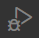
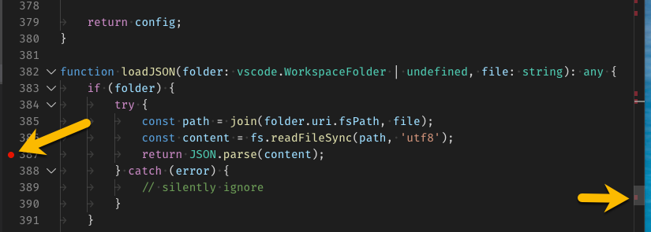
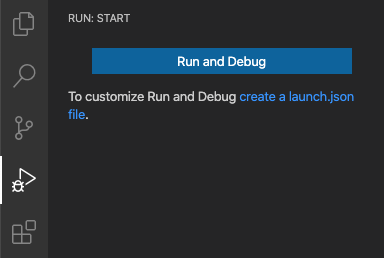

Ultra quick guide to debug with VSCode
| This is a very quick intro to debugging with VSCode. For a more in-depth explanation please go on the official debugging webpage of VSCode editor. |
 For a quick start with Visual Studio Code Debugger, simply click on the corresponding icon on the left tool bar.
Then put some breakpoints on relevant positions of your code like below:

Then simply run the debugger by clicking on Run and Debug
